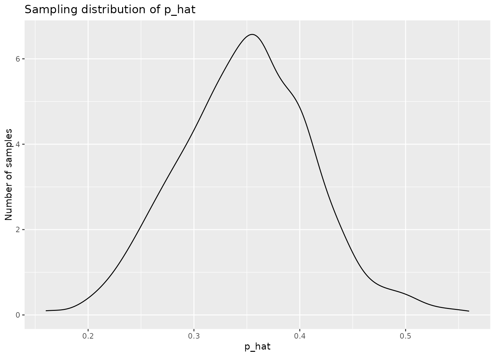

These functions extend the functionality of dplyr::sample_n() and
dplyr::slice_sample() by allowing for repeated sampling of data.
This operation is especially helpful while creating sampling
distributions—see the examples below!
Usage
rep_sample_n(tbl, size, replace = FALSE, reps = 1, prob = NULL)
rep_slice_sample(
.data,
n = NULL,
prop = NULL,
replace = FALSE,
weight_by = NULL,
reps = 1
)Arguments
- tbl, .data
Data frame of population from which to sample.
- size, n, prop
sizeandnrefer to the sample size of each sample. Thesizeargument torep_sample_n()is required, while inrep_slice_sample()sample size defaults to 1 if not specified.prop, an argument torep_slice_sample(), refers to the proportion of rows to sample in each sample, and is rounded down in the case thatprop * nrow(.data)is not an integer. When usingrep_slice_sample(), please only supply one ofnorprop.- replace
Should samples be taken with replacement?
- reps
Number of samples to take.
- prob, weight_by
A vector of sampling weights for each of the rows in
.data—must have length equal tonrow(.data).
Value
A tibble of size reps * n rows corresponding to repssamples of size n from .data, grouped by replicate.
Details
rep_sample_n() and rep_slice_sample() are designed to behave similar to
their dplyr counterparts. As such, they have at least the following
differences:
In case
replace = FALSEhavingsizebigger than number of data rows inrep_sample_n()will give an error. Inrep_slice_sample()having suchnorprop > 1will give warning and output sample size will be set to number of rows in data.
Note that the dplyr::sample_n() function has been superseded by
dplyr::slice_sample().
Examples
library(dplyr)
#>
#> Attaching package: ‘dplyr’
#> The following objects are masked from ‘package:stats’:
#>
#> filter, lag
#> The following objects are masked from ‘package:base’:
#>
#> intersect, setdiff, setequal, union
library(ggplot2)
library(tibble)
# take 1000 samples of size n = 50, without replacement
slices <- gss %>%
rep_slice_sample(n = 50, reps = 1000)
slices
#> # A tibble: 50,000 × 12
#> # Groups: replicate [1,000]
#> replicate year age sex college partyid hompop hours income class
#> <int> <dbl> <dbl> <fct> <fct> <fct> <dbl> <dbl> <ord> <fct>
#> 1 1 1994 25 male no degr… ind 5 40 $1500… work…
#> 2 1 2004 57 male degree ind 2 60 $2500… work…
#> 3 1 1976 36 female degree dem 3 40 $1000… work…
#> 4 1 1989 37 male degree dem 2 40 $2500… work…
#> 5 1 2000 34 male degree ind 1 43 $2500… work…
#> 6 1 2000 24 male no degr… ind 2 50 $2500… midd…
#> 7 1 1982 56 female no degr… dem 2 30 $2500… midd…
#> 8 1 2008 21 male no degr… ind 4 40 $1500… work…
#> 9 1 2008 23 male no degr… ind 1 50 $2500… work…
#> 10 1 1991 43 male no degr… rep 1 40 $2500… midd…
#> # … with 49,990 more rows, and 2 more variables: finrela <fct>,
#> # weight <dbl>
# compute the proportion of respondents with a college
# degree in each replicate
p_hats <- slices %>%
group_by(replicate) %>%
summarize(prop_college = mean(college == "degree"))
# plot sampling distribution
ggplot(p_hats, aes(x = prop_college)) +
geom_density() +
labs(
x = "p_hat", y = "Number of samples",
title = "Sampling distribution of p_hat"
)

# sampling with probability weights. Note probabilities are automatically
# renormalized to sum to 1
df <- tibble(
id = 1:5,
letter = factor(c("a", "b", "c", "d", "e"))
)
rep_slice_sample(df, n = 2, reps = 5, weight_by = c(.5, .4, .3, .2, .1))
#> # A tibble: 10 × 3
#> # Groups: replicate [5]
#> replicate id letter
#> <int> <int> <fct>
#> 1 1 2 b
#> 2 1 1 a
#> 3 2 1 a
#> 4 2 4 d
#> 5 3 3 c
#> 6 3 1 a
#> 7 4 1 a
#> 8 4 4 d
#> 9 5 2 b
#> 10 5 1 a